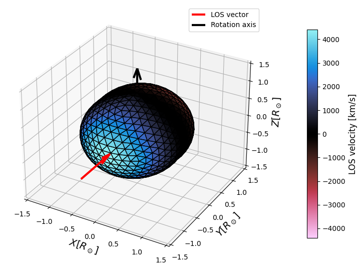

Creating a Mesh Model
The SPICE library provides functionality to create and manipulate icosphere models, which are useful for representing stellar surfaces. Here’s how you can create and modify an icosphere model:
Basic Icosphere Creation
To create a basic icosphere model, you can use the IcosphereModel.construct() method:
from spice.models import IcosphereModel
from transformer_payne import Blackbody
# Initialize a Blackbody model (for spectrum calculation)
bb = Blackbody()
# Create an icosphere model
m = IcosphereModel.construct(
10000, # Minimal number of vertices
1., # Radius in solar radii
1., # Mass in solar masses
bb.to_parameters(), # Parameters for the spectrum model
bb.parameter_names # Names of the parameters used to match between overridable parameters and mesh parameters
)
The parameter of vertices is the minimal number of vertices for the icosphere. The actual number of vertices will be higher, and depends on the refinement level. Icosphere is a tessellation of a sphere, and the number of mesh elements is given by the formula:
where L is the level of refinement.
The following table shows the number of vertices for different refinement levels:
Refinement Level |
Number of Vertices |
|---|---|
1 |
80 |
2 |
320 |
3 |
1280 |
4 |
5120 |
5 |
20480 |
The icosphere model requires a spectrum model to be provided, which is used to calculate the parameters of each vertex. In the case of the Blackbody model, the parameters are the temperature, but more complex models contain more parameters such as logg, individual abundances, etc. In principle, any model can be used for the spectrum, and the model can contain any number of parameters - as long as the parameters are defined in the spectrum model.
Some parameters may be fixed for the mesh, and some may be overridable - for example, logg depends on the mass and radius, so it may be calculated automatically from the parameters in the case of distorted models, e.g. pulsation or rotation.
Adding Rotation
SPICE has a functional API, which means that all transformations are done using functions that return a new model instance.
You can add rotation to your model using the add_rotation() function:
from spice.models.mesh_transform import add_rotation, evaluate_rotation
import jax.numpy as jnp
# Add rotation to the model
rm = add_rotation(
m, # Model instance
rotation_velocity=10., # Rotation velocity in km/s
rotation_axis=jnp.array([0, 0, 1]) # Rotation axis (relative to the model center)
) # Rotate around z-axis
t = 1. # time in seconds
# To get the rotated mesh at a specific time:
rotated_mesh = evaluate_rotation(rm, t) # t is the time in seconds
Visualizing the Mesh
SPICE provides functionality to visualize the mesh model. You can use the plot_3D function from the spice.plots.plot_mesh module to create a 3D visualization of your mesh.
Here’s an example of how to visualize a mesh with rotation:
from spice.plots import plot_3D
import matplotlib.pyplot as plt
fig, axes = plot_3D(
rotated_mesh,
'los_velocities', # property to be mapped - can be either a string or an integer
cmap='magma'
)
This will create a 3D plot of your mesh, colored by the ‘los_velocities’ property (which represents the line-of-sight velocities).
Here’s an example of what the output should look like:

In this image, you can see the 3D structure of the mesh, with colors representing the ‘los_velocities’ values. The red arrow indicates the line of sight, and the black arrow shows the rotation axis.
You can customize the visualization by changing the property parameter. For example, you could use ‘los_velocities’ to color the mesh by line-of-sight velocities, or ‘mus’ to show the angle between the normal and the line of sight.
Adding Pulsation
To add pulsation to your model, you can use the add_pulsation() function:
from spice.models.mesh_transform import add_pulsation, evaluate_pulsations
# Add pulsation to the model
m = add_pulsation(
m, # Model instance
1, # m order
1, # n degree
100., # pulsation period
jnp.array([[0.5, 0.]]) # Fourier series parameters
)
t = 40. # time in the same unit as the pulsation period
# To get the pulsated mesh at a specific time:
pulsated_mesh = evaluate_pulsations(m, t) # t is the time
Note that the time and pulsation period can be any time units, as long as they are consistent.
The pulsation amplitude is given by the fourier series parameters. It can be calculated using the following function:
where \(D\) is the mean amplitude, \(A_n\) are the amplitudes, \(\phi_n\) are the phases, and \(P\) is the pulsation period. The amplitude corresponds to the percent of the original radius.
The Fourier series parameters are provided as a 2D array with shape (N, 2), where N is the number of terms in the series. Each row contains [A_n, phi_n], where A_n is the amplitude and phi_n is the phase for the nth term. For example, [[0.1, 0.0], [0.05, 1.57]] represents a series with two terms: the first with amplitude 0.1 and phase 0, and the second with amplitude 0.05 and phase π/2. Again, note that the amplitude is given in percent of the original radius.
This example pulsation will look like this:
{kind=link}
Of course, this is a highly unrealistic, exaggarated pulsation, but it shows the effect of pulsation on the mesh.
Adding Temperature Spots
You can add temperature spots to your model using spherical harmonics:
from spice.models.spots import add_spherical_harmonic_spot
base_temp = 5700
spot_temp = 15000
# Add temperature spots
m = add_spherical_harmonic_spot(
m, # Model instance
4, # m order
4, # n degree
param_delta=9300, # difference in the parameter value between the spot and the background
param_index=0 # index of the parameter in the parameters array
)
which should produce a temperature map like this:

or add it as a circular spot:
from spice.models.spots import add_spot
m = add_spot(
mesh=m, # Model instance
spot_center_theta=0.5, # spot center in spherical coordinates, in radians
spot_center_phi=0.5, # spot center in spherical coordinates, in radians
spot_radius=50., # spot radius in degrees
parameter_delta=1000, # difference in the parameter value between the spot and the background
parameter_index=0, # index of the parameter in the parameters array
smoothness=0.5 # smoothness of the spot edges
)
The larger the smoothness parameter, the sharper the spot edges. A value of 1.0 will be a one-zero transition between the spot and the background.
which should produce a temperature map like this:
{kind=link}
In both cases, you can also add multiple spots to the mesh. Either by adding two spherical harmonic modes:
m = add_spherical_harmonic_spots(
mesh=m,
m_orders=jnp.array([2, 3.]),
n_degrees=jnp.array([2, 3.]),
param_deltas=jnp.array([1000, 1000.]),
param_indices=jnp.array([0, 0]),
)
which will produce a temperature map like this:

A comparison of two separate harmonic modes: left is m=2 and n=2, right is m=3 and n=3.


or by adding two circular spots:
m = add_spots(
mesh=m, # Model instance
spot_center_thetas=jnp.array([0.5, 1.5]), # spot center in spherical coordinates, in radians
spot_center_phis=jnp.array([0.5, 1.5]), # spot center in spherical coordinates, in radians
spot_radii=jnp.array([20., 20.]), # spot radius in degrees
parameter_deltas=jnp.array([1000., 1000.]), # difference in the parameter value between the spot and the background
parameter_indices=jnp.array([0, 0]), # index of the parameter in the parameters array
smoothness=jnp.array([0.5, 0.5]) # smoothness of the spot edges
)
This exampe adds two spots to the mesh. The spots are defined by their center in spherical coordinates, their radius, and a differential parameter that quantifies the change induced by the spot.

These examples demonstrate the basic usage of the SPICE library for creating and modifying icosphere models. You can combine these techniques to create complex stellar surface models with various features like rotation, pulsation, and temperature spots.